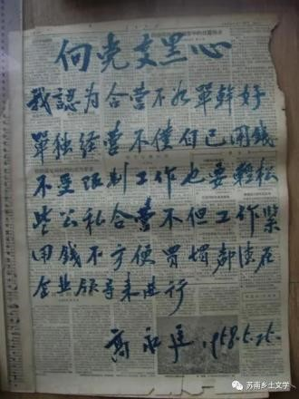
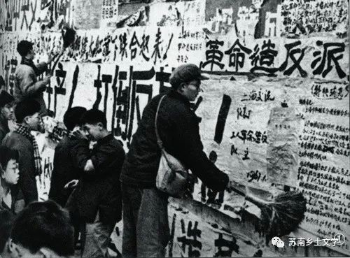
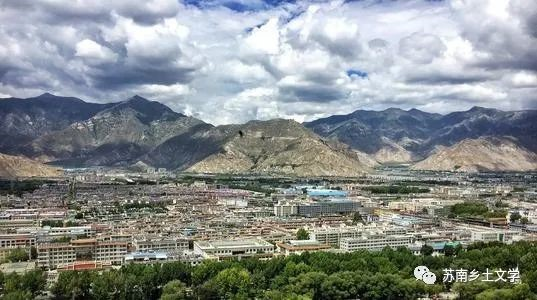
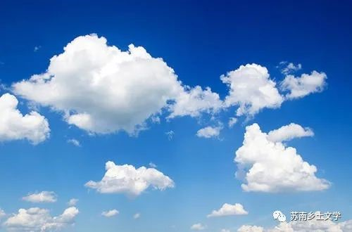
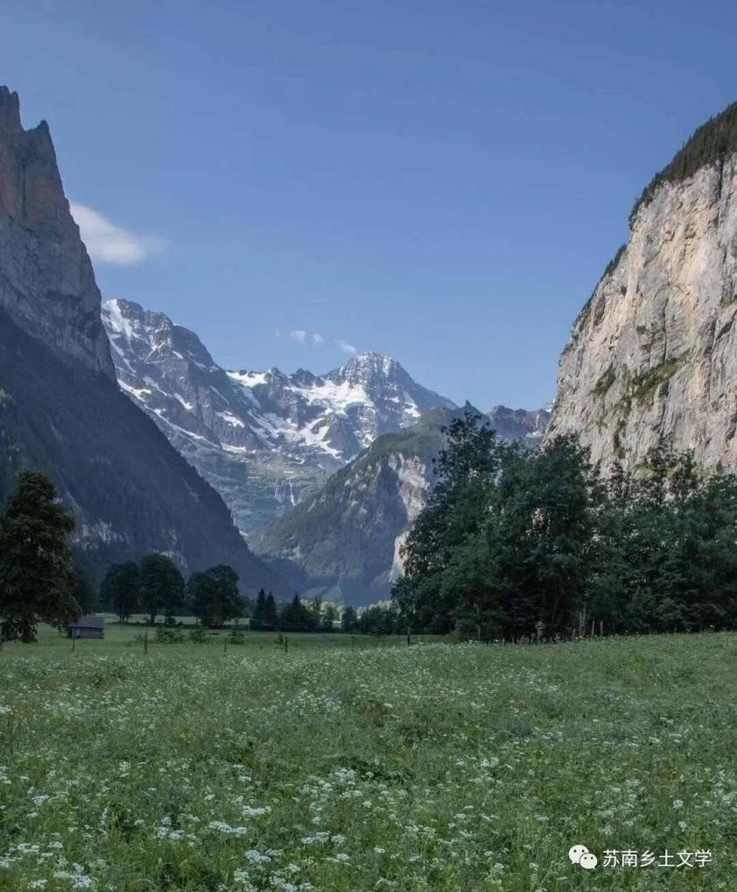

《青天在上》
高晓声
当《青天在上》出现在我们面前时,它已不是江南农村的桑树,桃树,柳树,河边的油楝树,而是一棵根深叶茂,干高枝壮,临风摇曳,婆娑多姿的乌桕树。它是当代长篇小说艺术中的一件精品。
- 
- 
一、思想政治
1.右派
20世纪的中国“右派分子”，一般指1957年“反右运动”中被错划的约55万知识分子和爱国民主人士（包括极为少数的党员干部）。1978年4月，中共中央决定全部摘掉其余右派分子的帽子。1979年9月，中共中央决定对被划为右派分子的人进行全面复查，把错划为右派分子的同志的错误结论改正过来，1980年5月8日，平反右派的工作告一段落，对曾经被划为右派的55万人绝大部分以上平反昭雪。
右派的惩罚：牢房改造
写检查的纸摊在桌子上，一个字也没有写。真荒唐,这是什么态度，还能改造吗？可是脑子里想什么，毕竟谁也不晓得有人来了，陈文清不总提笔在手，愁眉苦脸在挖思想的根子吗！
陈文清是有过认真写检查的时候的，他挨了批回房里为什么就不该想爱人？
2.大跃进之时时代依旧以阶级斗争为主
大运动，大变动，……中国人民历尽艰险，流了那么多的血，付出了巨大的牺牲，好不容易走到了社会主义关下，原应该皆大欢喜走进去，谁知树欲静而风不止,一大批阶级敌人在最后关头被迫撕掉了伪装，赤裸裸暴露出了狰狞面目。他们借口帮助党整风写出来的一张张反党反社会主义的大字报，就是无可辩驳的证据。阶级斗争是否有连坐嫌疑？
有些事情使珠珠都难以容忍。比如文清的父亲陈耀先，是个坚决抗日的国民党普通党员，1944年被日本鬼子杀害,到了现在,却成了文清反动思想的一条又臭又长的老根子。
大跃进是否真的能消解阶级斗争？
陈文清非常赞成中国共产党的观点,并且延伸一下，认为“随着社会主义建设愈来愈有成就，阶级斗争就会愈来愈缓和气这是顺理成章的嘛!根据现成的理论,共产主义就是社会主义的高级阶段，这个阶段已经消灭了阶级和阶级意识,当然就不会有阶级斗争了。由此可见，成就同阶级斗争成反比例才符合社会发展规律。大跃进加速了社会主义建设,也就加速了阶级斗争的缓和，报纸上也已经在提共产主义和全人类的解放了。
“可是她是我的妻子，我完全了解她，她是同志,不是敌人嘛！唉……我全糊涂了，一分为二，我的头脑也象被一刀劈成了两个……有人说，神经失常的人都是由严重的个人主义引起的，决不能因为文兰就对党的信任动摇。你说得对，没有党，我们就没有一切。
3.真假民主、真假法治
在最后一次“宣判”①会上，还有人朗声批他说：“你在等待处理的几个月中，做了些什么？认罪是假的，改造更谈不上。你只做了两件事，一是保养身体，二是谈情说爱。群众是真正的英雄，群众的眼睛是雪亮的，老实说,你被头窝里做的事情，我们都晓得! ”②
①因为无法可依，所以在“宣判"二字上加引号,又因为确实加罪于人，不能不用“宣判”两字。
②这是一句谚语，足见我们有以此为荣的传统。
4.阶级鄙视
真他妈小资产阶级的软弱性!天生的贱骨头，一朝失了势，见了芝麻绿豆大的官也怕。可见自己往昔也全靠外面披的一层皮，并非真有内在的东西。对小资产阶级的批判
可是他那劣根性毕竟太深，明知脸皮保不住，总还拖拖拉 拉，哪怕多保住一分钟也好,能保得耳后根一小块也好，千万不要很快完全剥光了。小资产阶级的不彻底性，统统在他思想里暴露出来。可领导上的交代是很彻底的，叫他下去在群众的监督下劳动改造，重新做人。为了便于群众监督，除了由领导当众宣布他的罪行以外，还要他自己向群众一一说清。这做法就是针对他的不彻底性来的。
5.时代的价值观取向
顺我者昌，逆我者亡，不跟着旋转的全扫光。什么是是，什么是非？什么是曲，什么是直？什么是明暗,什么是黑白？在革命的关键时刻，不管是老将还是新兵，都只有相信党，依靠党，方向才会明确,精神才有寄托。
主体自我低于人民
我刚刚把你放在我这儿的几本书看完。那本苏联小说 《海鸥》，因为过去是团中央推荐的读物，我是看过的，现在再看，觉得发现了从前没有发现的东西。你还记得吗，《鸥》里那位年轻轻的女主角薇拉，在客观环境相当顺利的时候，忽然说了这样一句话：“假如一旦人民不需要我了，那么，我宁可死，也不愿再活下去!"我第一遍看的时候，曾经被她这种“只为人民而活着”的高尚精神所感动。假使我能够怀疑那位苏联姑娘在主观方面有什么背叛，那么难道我连自己都不了解?都要怀疑自己是一个假人吗？推己及人，我才省悟到那位苏联姑娘的主观思想也植根在客观之中，你说是不是呢？是不是呢？为什么她同我一样都害怕掌握不住自己的命运呢？
- 
- 
二、文化政策
1.乡下人的婚姻观
在乡下，到文清这把年纪的人，早就结了婚，生了孩子，少则一两个，多则三四个，被封成家长了。倘还有独身的，定然是窝囊废，不配有女人的。需知不孝有三，无后为大戒。门香烟，非同儿戏。在乡亲们看来,右派不右派，远远不及结婚不结婚来得重要。尤其使人关心的是，眼下有一批革命老婆，同当了右派的丈夫闹离婚，不但成风，并且极时髦。
2.农村人的致富之路：市场转移；农业指导思想：单打一③
在邻县山区扎扫帚的十几个人，不久就回来了。他们给生产队带回了欢乐的气氛。社员多多少少都分到了些钱，手头活起来了。大队里代销店里出出进进的多是他们队的人。姑娘媳妇们串联着三五成群上柳塘镇剪衣料的也天天有。
这趟进山扎扫帚，虽然比家里吃苦，赚的钱倒比往年多。往年是把原料买了运回来扎，成品只占原料重量的六成，有四成下脚只能当柴烧。在山里扎好了运出来，就省了四成运费。特别是单打一的指导思想帮了大忙。山区的原料销不掉，降了价；市场上扫帚没有货，往上涨。他们运到锦川市卖了个好价钱，钞票放在衣袋里，两手空空晃着两条大腿荡回来，一路上嘻嘻哈哈尽说俏皮话。真是时势造英雄，兵来将挡，水来土掩，办法都是逼出来的。否则这塞得结结实实的脑壳子几时才能开得窍来赚大钱。
③ 单打一，集中全力搞农业，其他副业都主张砍掉。
三、感悟
高晓声的《青天在上》，熟练运用反讽，展现了文人在特殊时期的政治思考。因为高晓声本人在苏南农村生活过很长时间，所以文本之中尽显乡土气息。
而且，《青天在上》体现了政策在农村的具体落实与实施，其中反映了上层建筑和下层人民生活浓烈的割裂感。文本也涉及了农村发展的部分，体现了农村人通过市场转移走向致富之路，农村在那个时代发展经济的指导思想就是集中全力搞农业。我们可以从中窥见苏南农村发展的一些经验，这也将成为我们项目后续实践部分的关注点。